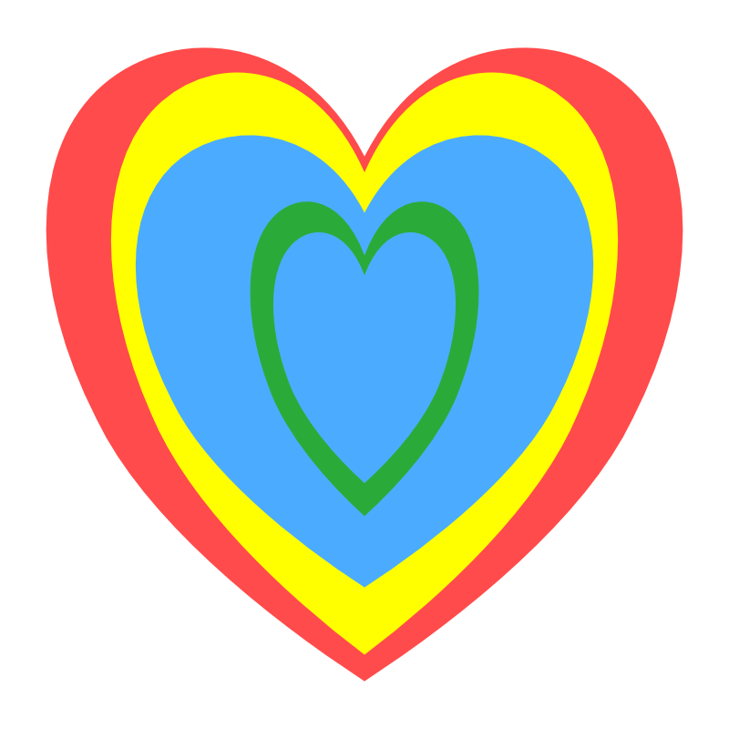

<script>
    //   // Erstelle ein Image-Objekt
    //   const image = new Image();
    //   // Lade das Bild von einer URL
    //   image.src = "/001.png";

    const image = document.getElementById("image")

    // Warte, bis das Bild geladen ist
    image.onload = function () {
        // Erhalte die Abmessungen des Bildes
        const width = image.naturalWidth
        const height = image.naturalHeight
        // Erstelle ein Canvas-Element
        const canvas = document.createElement("canvas")
        // Setze die Größe des Canvas gleich der des Bildes
        canvas.width = width
        canvas.height = height
        // Erhalte den Kontext des Canvas
        const context = canvas.getContext("2d")
        // Zeichne das Bild auf den Canvas
        context.drawImage(image, 0, 0)
        // Erhalte die Pixelwerte des Canvas
        const imageData = context.getImageData(0, 0, width, height)
        // Erhalte die Daten als Uint8ClampedArray
        const data = imageData.data
        // Erstelle ein Objekt, um die Anzahl der Pixel jeder Farbe zu speichern
        const colors = {
            red: 0,
            green: 0,
            blue: 0,
            yellow: 0
        }
        // Gehe durch alle Pixel
        for (let i = 0; i < data.length; i += 4) {
            // Erhalte die RGB-Werte jedes Pixels
            const r = data[i]
            const g = data[i + 1]
            const b = data[i + 2]
            // Bestimme die Farbe jedes Pixels
            // Annahme: Rot, wenn r > g und r > b
            // Grün, wenn g > r und g > b
            // Blau, wenn b > r und b > g
            // Gelb, wenn r > b und g > b
            let color = ""
            if (r > g && r > b) {
                color = "red"
            } else if (g > r && g > b) {
                color = "green"
            } else if (b > r && b > g) {
                color = "blue"
            } else if (r > 200 && g > 200 && b < 100) {
                color = "yellow"
            }
            // Zähle die Anzahl der Pixel jeder Farbe
            if (color) {
                colors[color]++
            }
        }
        // Berechne die Farbanteile in Prozent
        const total = width * height
        const percentages = {}
        for (let color in colors) {
            percentages[color] = (colors[color] / total) * 100
        }
        // Gib die Farbanteile aus
        console.log(percentages)
    }
</script>
